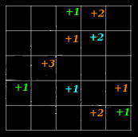
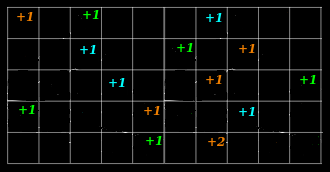
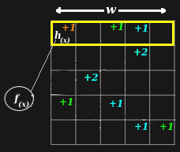
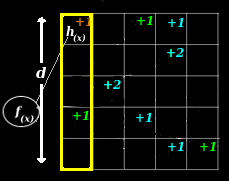

Count-Min Sketching, Configuration & Point-Queries
A probablistic counting algorithm, implementation, configuration, and application notes.
Introduction
Sketching algorithms like this one are the heart of many stream processing applications for good reason. Sketches can produce estimates of configurable quality, require requires sub-linear space and often do not need to store identifiers. This makes them an attractive option for counting
a large number of distinct items with relatively little space.
The Count-Min Sketch is a probablistic sketching algorithm that is simple to implement and can be used to estimate occurrences of distinct items. This article will give you a hands-on walk through of how this works in a live demo, and explaination of how to configure your own sketch.
Sketches
A sketch of a matrix A is another matrix B which is significantly smaller than A, but still approximates it well.
Theory
This section outlines brief summary of the important properties of this sketch. I'll try to provide an explaination of what these properties mean without getting bogged down in mathematical proofs so that you'll be able to reason about sketch behavior and configuration.
The theory behind this particular stream summary was first described by Graham Cormode in "Count-Min Sketch".
Model
A few simple equations are used to model this sketch:
- U: a (possibly large) universe of possibilities
- x: x ∈ U, set x selected from universe of U
- δ: error probability (delta)
- ε: error factor (epsilon)
- f(x): true number of occurrences of x
The sketch can be defined as:
- f '(x): estimated number of occurrences of x
Guarantee
Cormode proved the sketch provides the guarantee that with probability 1 - δ:
- f(x) <= f '(x)
- truth <= estimate
This means that the sketch never under-estimates the true value, though it may over-estimate.
Cormode also proved the sketch provides the guarantee that with probability 1 - δ:
- ∥f∥ = Σx ∈ U f(x)
- f '(x) <= f(x) + ε∥f∥
- estimate <= truth + error
This means that amount of error in the estimate is proportional to the total aggregate number of occurences seen, and to the accuracy. This also means significantly larger truth values can dwarf smaller the error term producing more accurate estimates for items with the largest counts.
Finally, the theory provides a few formulas for determining the dimensions of the array used to store estimates.
- width: ⌈e / ε⌉
- depth: ⌈ln 1 / δ⌉
Implementation
This section provides a short description of the algorithm and illustrations of operations on the underlying data structures.
Given a configuration:
- δ: error probability (delta)
- ε: error factor (epsilon)
Setup
This requires O((1 / ε) * ln(1 / δ)) space.
- Create an array with the width and depth, given above, initialize to zero.
- Create a set of size depth universal hash functions, { h1 ... hd ... hdepth }.
Increment
This requires O(ln(1 / δ)) time. For each level of depth, d in [0, depth):
- Apply the hash hd to the value of x, modding it with the width to generate a column number. col = hd(x) % width
- Increment the count, storage[d, col]++
Below is an illustration of the hash functions on the leftmost diagram, and on the rest, sketch increments at increasing levels of depth (from left to right):
Collisions And Epsilon
Collisions are one source of error in the estimates a sketch can produce.
Below is an illustration, a hash function is selected on the left and a collision occurs during an update on the right. The net result is that the estimate contains counts that are higher than the true value.
Modeling Error Impact
|
Intuitively, it's easy to understand how collisions result in a value higher than the actual value. You can see this in the illustration above in cells containing a +2. The notion of over-counting is also reflected in the model:
Intuitively, it's easy to imagine how counting one more item to the example could result in more collisions, creating more overcounting, creating more +2s, and even some +3s, when no item ever appeared more than once. The notion that adding things to the sketch can increase the amount of error in any single estimate can be seen in the model, too:
The value of ∥f∥ is calculated by summing all of the counts together, adding more data naturally makes ∥f∥ bigger, increasing the error term, ε∥f∥.
| More Collisions |
| Wider Sketch - Fewer Collisions |
Configuring Epsilon
One strategy for reducing the amount of over-estimation is to hash into more buckets. The theory gives us a formula to describe the number of buckets used:
The value of ε is inversely proportional to the width of the sketch, so choosing a smaller ε would result in a wider sketch.
The error term for the estimate depends on ε, and is directly proportional to the amount of error in the estimate. Choosing a smaller ε would help reduce the over all error term, ε∥f∥.
The fact that more buckets requires more space is reflected in the O((1 / ε) factor of the space requirements.
|
Probability And Delta
Modeling Error Rate
At a high level this algorithm involves fitting n items into m buckets. The expected probablity of error would be number of items (n) / number of buckets (m):
- Pr(collision) = n / m (simple hashing)
- Pr(collision) <= 1 / n (pairwise independent hashing)
With a single hashing function, Pr(collision) can rise dramatically with large values of n. Universal hashing is a technique for maintaining lower Pr(collision) by randomly selecting a set of hash functions:
- Pr(collision) <= 1 / m (universal hashing)
| width = single trial |
| depth = # of indepedent trials |
Configuring Delta
Choosing a value of δ allows you to select a desired probability of error, Pr(desired). Pr(collision) is a function of the width of each row in the array, and may be a different and smaller than your Pr(desired) since width is chosen with different considerations.
- δ = Pr(desired)
- δ = Pr(desired) >= Pr(collision)
The familiy of universal hashes is also a familiy of independent hashes. This means that we can combine results from different independent trials. Each independent trial becomes a level of depth in the array.
- δ = Pr(desired) <= depth * Pr(collision)
Trials are repeated until enough are completed to achieve the Pr(desired), this is why the main loop in the algorithm is revolves around the depth of this array.
|
Querying a Sketch
Point-Query
Looking up the value of a counter in the sketch is a type of query called a point-query. This proceedure is very similar to the increment proceedure and also requires O(ln(1 / δ)) time.
Set your initial result to ∞, then for each level of depth, d in [0, depth):
- Apply the hash hd to the value of x, modding it with the width to generate a column number. col = hd(x) % width.
- Keep the minimum, result = min(result, storage[d][col]).
Configuration
When choosing a configuration, you are often trying to minimize the error term, ε∥f∥, of the estimate:
- Epsilon: Acceptable errors in estimation fall within a range which is a factor of ε. Smaller values of ε should produce sketch configurations that provide estimates closer to the true values. However, this will increase the space required by the sketch.
- Volume: Error in estimation is also proportional to the total number of distinct items counted. A factor in the error term, ∥f∥, is a summation of total number of occurences of each distinct item. Another way to reduce the error term is to reduce ∥f∥ by counting fewer things.
Alternatively, you can try to reduce the frequency error and increase the chance of success, (1 - δ). You may trade some level of error rate in the estimate for a savings in space:
- Confidence: The theory states that errors in estimation occur with probability of delta (δ). This makes the probability of success (1.0 - δ). Increasing this number can produce sketch configurations with reduced error rates, but that will require more memory.
Universal hashes?
- Seed: The seed parameter controls the distribution of universal hash functions that are used by the sketch.
A good rule of thumb for finding a starting configuration is to try an accuracy with as many significant digits as you have digits in your expected volume (e.g. given an expected volume of 5000 a good starting point for accuracy might be .0001).
Demonstration
The following demonstration allows you to visualize how the estimated and true values produced by these functions relate to one another. In this scenario, a set of random counts are generated and assigned to each key in a set of keys. Points are colored red to show when they are outside a factor of accuracy of the true value. For reference, a perfect estimate would look like a diagonal line, from the bottom left to the top right and would contain no red.
Observe
- Accuracy: Trading space for an error factor is what selecting an accuray allows for control over. Try changing the accuracy and notice the impact on the storage width.
- Confidence: Trading space for an error rate is what selecting n confidence allows for control over. Try changing the confidence and notice the impact on the storage depth.
- Cardinality: Counting with limited space is the primitive this stream summary ultimately provides. Configuring the cardinality allows for control over the potential space savings. Try changing the cardinality and notice the impact on the space savings over keeping a counter for every possible item.
- Volume: The error term in our estimate is proportional to the volume, or number of things counted. Try increasing the volume and notice the impact on the distribution of error.
- Seed: Try changing the seed and see if you notice any impact, you should see different distributions generate that follow the same general trends.
Truth vs. Estimate
Source Code: cmsketch.js
Implementation
Space
The width and depth of the array used to store the occurence estimates is given by:
- space = O((1 / ε) * ln(1 / δ))
Generally speaking, arrays will be wider than they are deep in most practical configurations (e.g. accuracy = 0.0001, confidence = 0.95 :: width = 27183, depth = 3).
Time
During reads and writes, the depth of the array dictates the number of hashes that are ultimately performed.
- O(ln(1 / δ)): Time Needed
Author
Eric Crahen
References
- "G. Cormode and S. Muthukrisnan, An improved data stream summary: the count-min sketch and its applications", Journal of Algorithms, 2005, pp. 58-75.
- "Simple and Deterministic Matrix Sketching", E. Liberty.
Google Tech Talk: The Bloom Filter
JavaScript Implementation: cmsketch.js